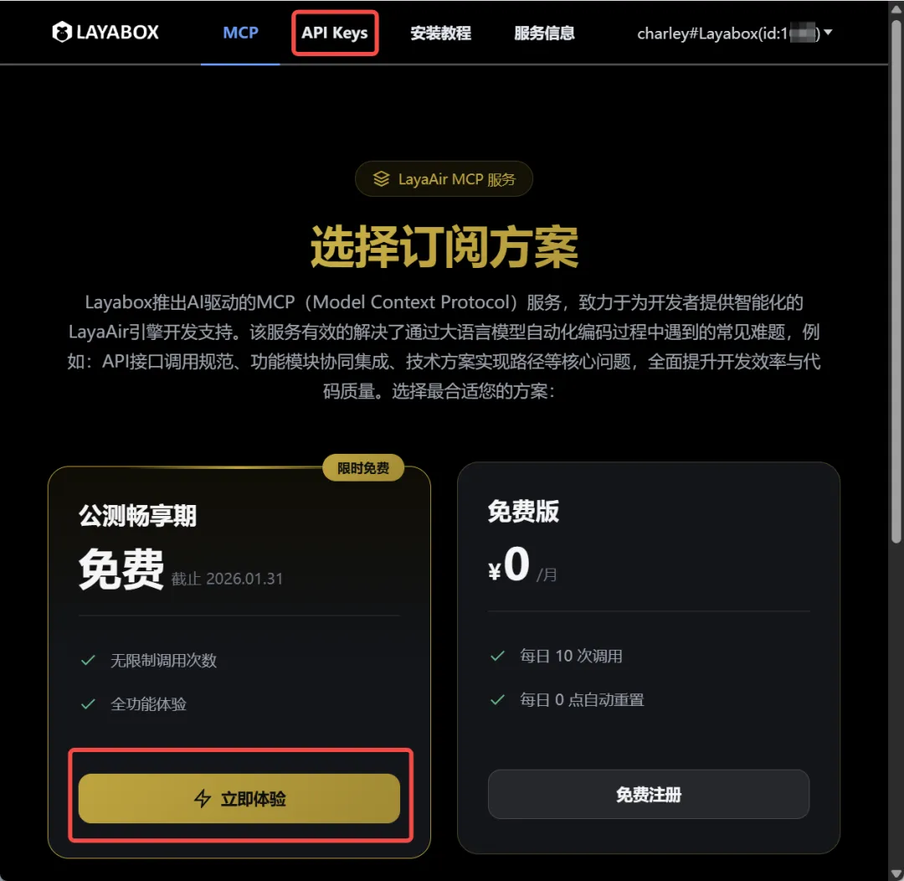

AI编码环境：CodingMCP
Author: Charley
LayaAir引擎推出了LayaAir-CodingMCP服务，让AI编码环境下，再也不会出现引擎幻觉问题。解决了AIGC在结合引擎进行开发时的一大难题。
1、CodingMCP解决的痛点
1.1 零成本上手LayaAir，抹平 “API 熟悉期”
在游戏与交互项目开发中，无论使用哪一款引擎，开发者在初期都会经历一个相似的阶段：
需要投入时间去熟悉引擎的 API 体系，以及各项功能的使用边界。
即使是经验丰富的开发者，在切换到一款全新的引擎时，也必须通过实际编码，逐步建立对引擎接口和使用方式的直觉。
这种熟悉过程往往并不会体现在某一个明显的逻辑错误上，可能是不同引擎API用法差异带来的误用，也可能是不知道或不熟悉引擎API导致的问题。
在项目节奏宽松时，这样的磨合是可以接受的；但在需要快速推进的场景下，这段“API 熟悉期”就会成为影响整体效率的关键因素。开发者明明具备足够的编程能力，却仍然被迫把大量时间花在引擎接口的准确使用上。
即便引入了 AI 辅助编码，这一问题也并未自动消失。通用 AI 模型在面对垂直领域的引擎时，往往缺乏足够庞大的专项训练数据，导致不同引擎之间，甚至同一引擎不同版本之间的 API 信息混杂在一起，极易导致 AI 幻觉现象。结果是生成的代码看似合理，却调用了不存在或不适用的接口。
在这种情况下，即便是主流且知名的 AI 模型，也很难仅凭自身能力，准确地按照某一个具体版本的引擎来调用 API。开发效率反而可能不如开发者手动查询官方文档，这也使得 AI 编码在实际项目中，往往必须建立在“有引擎熟手兜底”的前提之上。
LayaAir-CodingMCP 的意义，正是在这一客观现实之上，直接抹平了引擎上手阶段的主要门槛。
在接入 LayaAir-CodingMCP 之后，无论是直接由 AI 生成代码，还是通过对话方式向 AI 咨询引擎相关问题，均可以指定具体的 LayaAir 引擎版本，所依据的都不再是猜测性的知识，而是基于真实 LayaAir 引擎 API 大量示例与官方文档训练得到的结果，从而为开发者提供准确、可用的代码生成与解答。
这使得原本需要通过反复试错和人工验证才能跨过的「API 熟悉期」，被显著压缩，甚至在实际开发中被直接抹平。
1.2 解决“必须有引擎经验”的招聘难题
在真实的项目环境中，团队往往并不是缺程序员，而是缺熟悉目标引擎的程序员。
尤其是在项目启动或版本迭代的关键阶段，单纯依赖招聘“正好熟悉某一款引擎”的开发者，往往成本高、周期长，也充满不确定性。
因此，许多团队不得不选择一个折中的方案：招聘具备通用编程能力、熟悉任意一款主流引擎的开发者，再通过边做边学的方式补齐目标引擎的使用经验。但这种方式的隐性成本非常高。即便开发者本身能力不弱，在不熟悉引擎 API 与使用规范的前提下，也不可避免地会在早期阶段频繁踩坑，拖慢整体开发节奏。
LayaAir-CodingMCP 在这里提供了一种不同的解法。
它并不是要求每一位新加入的开发者都迅速成长为引擎专家，而是让 AI 在编码阶段就具备对 LayaAir 引擎的真实理解能力，从而在很大程度上弥补开发者对引擎经验的不足。
在实际使用中，即使是此前从未接触过 LayaAir 的开发者，也可以在 AI 的辅助下，直接生成符合引擎规范、版本准确的代码。原本需要由资深引擎开发者反复检查、纠错的 API 使用问题，被前移到了 AI 生成阶段进行约束与修正。这使得团队在用人策略上，不再被“是否熟悉 LayaAir”这一条件强烈限制，而可以更加关注开发者的通用能力与业务理解能力。
从结果上看，LayaAir-CodingMCP 实际上承担了“引擎经验放大器”的角色，让团队可以用更灵活的方式组建开发力量，同时保持项目的稳定推进。
2、CodingMCP配置与使用流程
2.1 获取通信密钥
要使用 LayaAir-CodingMCP 服务，首先需要获取通信密钥。开发者可以通过 LayaAir 3.3.6 及以上版本的 IDE，打开菜单 AI 服务 -> CodingMCP 服务，如图 2-1所示，或者直接在浏览器中输入网址（https://client.layaair.com/mcp/index.html）访问。

（图 2-1）
打开页面后，点击右上角的登录按钮，选择账号登录或微信扫码登录方式，完成注册或登录。如图 2-2 所示。

（图 2-2）
登录成功后，点击订阅选项上的按钮，或者点击顶部导航的API Keys，进入 API Keys 页面。如图 2-3 所示。

（图 2-3）
在API Keys 页面，点击“创建 API Key”按钮。在弹出的窗口中输入 Key 的名称，然后确认创建，即可立即生成密钥值。如图 2-4 所示。

（图 2-4）
[Tip]
生成的 Key 需要开发者自行复制并妥善保存，因为关闭页面后将无法再次查看。在后续的 MCP 配置中，需要将这个 Key 填写到对应位置，以完成服务授权。
2.2 配置 CodingMCP 服务
配置之前，开发者需要先下载安装 Cursor 编辑器。在编辑器中，打开 “Tools & MCP” 配置栏目，点击 ”New MCP Server“，添加 LayaAir-CodingMCP 服务的配置。如图 2-5 所示。

（图 2-5）
注意：添加成功后，会如上图一样，展示出MCP服务的API，请务必保障添加成功并保持开启状态。
下面是一个推荐的配置模板：
{
"mcpServers":{
"laya_mcp_server": {
"url": "https://laya-knowledge-mcp.layaair.com/mcp",
"headers": {
"LAYA_PRE_VERSION" : "v3.3.5",
"LAYA_VERSION" : "v3.3.5",
"LAYA_ALLOWED_DATASETS": "LayaAir",
"LAYA_MCP_API_KEY": "YOUR_API_KEY"
}
}
}
}
各配置项说明如下：
- url：MCP 服务访问地址，直接复制模板中的地址即可。
- LAYA_PRE_VERSION：用于版本差异对比查询的引擎版本号。默认情况下可以与
LAYA_VERSION保持一致。当需要对比不同版本之间的 API 变更时，可指定为旧版本号。例如，如果当前项目基于 v3.1.1 开发，而引擎已升级至 v3.3.5，则将LAYA_PRE_VERSION设置为 v3.1.1，LAYA_VERSION设置为 v3.3.5，即可从知识库获取 v3.1.1 → v3.3.5 期间的全部变更信息，包括类的新增、删除或修改，方法变更及参数调整，接口行为变化等。 - LAYA_VERSION：MCP 服务读取和工作的目标引擎版本标识，决定 AI 查询和返回的内容基于哪个 LayaAir 版本。开发者可根据项目实际使用的版本进行修改。
- LAYA_ALLOWED_DATASETS：允许访问的 MCP 知识库集合，目前仅支持 LayaAir，引擎训练的 API 与文档均来自此知识库。后续会支持其他训练结果，届时可更新此参数。
- LAYA_MCP_API_KEY：MCP 服务访问密钥，即前面创建并保存的 API Key。
2.3 设置 Cursor 规则文件
在完成 LayaAir-CodingMCP 配置之后，如果主 AI 不知道如何与 MCP 服务协同工作，可能会影响最终生成代码的效果与质量。为此，我们提供了一份规则模板，开发者可以直接参考使用，或者在此基础上根据项目需求进行优化。
在 Cursor 编辑器中，进入 “Rules and Commands” 配置栏目，点击 ”Project Rules -> Add Rule“ 创建规则文件。如图2-6所示。将提供的规则模板内容复制到 .mdc 后缀的规则文件中即可生效。

（图2-6）
规则模板内容如下：
---
alwaysApply: true
---
## 命名空间约定
**必须使用 `Laya.` 前缀**访问所有引擎类和静态方法。
✅ `Laya.Sprite`, `Laya.Handler.create(...)` ❌ `Sprite`, `Handler`
---
## 入口规范 (Entry.ts)
入口函数结构固定，禁止修改：
```typescript
export async function main() { /* 正式初始化逻辑 */ }
```
❌ 禁止提交测试代码到 `main` 函数
---
## 版本与 API 查询
- 查询 API 时附加 `<LAYA_VERSION>` 版本号
- 迁移时对比 `<LAYA_PRE_VERSION>` → `<LAYA_VERSION>` 的 API 差异
- 以 MCP 返回的精准文档为准，自我修正幻觉
---
## UI 系统识别
读取 `settings/PlayerSettings.json` 判断 UI 类型：
| `addons["laya.ui"]` | 类型 | 约束 |
|---|---|---|
| 字段不存在 | classic | 仅用经典 UI（Box/Button/Label 等） |
| `"both"` | both | 两套均可，同模块保持一致 |
| `"ui2"` | new | 仅用新 UI (GBox/GButton/GLabel 等) |
---
## 物理引擎识别
读取 `settings/PlayerSettings.json` 判断物理引擎：
| `physics3dModule` | 引擎 |
|---|---|
| 字段存在 | PhysX |
| 字段不存在 | Bullet |
查询物理 API 时按引擎类型过滤。
---
## MCP 知识库
LayaAir API 相关问题通过 MCP 查询，需附带版本号、UI 类型、物理引擎类型。
规则文件的主要作用是：
- 统一约定：无需在每次与 AI 交互时反复说明如“统一使用
Laya.前缀”或“本项目采用新版 UI 体系”等规则。规则文件一旦定义，AI 会自动遵循这些约定，开发者只需描述业务需求。 - 自动识别项目环境：AI 会读取并解析项目中的
PlayerSettings.json文件，根据其中的addons、physics3dModule等配置项，自动判断当前项目所使用的功能模块和 API 版本，从而避免误用或混用接口。 - 保持代码风格一致：无论由谁使用 AI 生成代码，最终输出都遵循统一规范，避免出现部分文件使用
Laya.Sprite、部分文件直接使用Sprite的情况，提高整体代码可维护性。 - 优先使用真实文档：规则文件明确要求 AI 通过 MCP 服务查询 LayaAir 引擎训练的 API 和知识库，确保生成的代码基于真实文档和 API 进行推理和生成，而非依赖记忆或产生幻觉，从而避免错误或不存在的接口调用。
通过设置规则文件，让Cursor 将能够通过 LayaAir-CodingMCP 服务获取准确的引擎 API 与文档等**信息**，为 AI 编码提供可靠的支持，从而避免调用错误和效率低下的问题，大幅提升开发效率和代码质量。
3、CodingMCP开发实践
完成 LayaAir-CodingMCP 配置与规则文件设置后，开发者即可在 Cursor 中正常使用 AI 服务进行项目开发。当主 AI 模型遇到与引擎相关的开发需求时，会根据规则文件与 LayaAir-CodingMCP 协同，从服务中获取准确的 API 信息，确保生成的代码调用正确无误。
在实际测试中，我们使用 Cursor + LayaAir-CodingMCP 服务开发小游戏原型时，大多数项目能够一次性生成可靠、可运行的原型。即使偶尔出现报错或功能实现未达预期的情况，也并非 LayaAir 引擎 API 错误，通常是 AI 编码逻辑问题，这些问题可以通过与主 AI 模型沟通纠错，或切换为国际知名 AI 模型（例如 GPT-5.x）进行修正。
借助 LayaAir-CodingMCP 与 Cursor 的组合，开发者能够快速将创意转化为可运行的 2D 或 3D 游戏原型或生成具体的功能模块，大幅降低开发试错成本，提升数倍的项目开发效率。
开发者可在B站（https://space.bilibili.com/1736809941）或LayaAir引擎的视频号中查看我们的开发实践全流程视频。
通过 LayaAir-CodingMCP，开发者不仅获得了一个可靠的辅助工具，更拥有了一种未来感十足的生产力模式——AI 与引擎的深度协作，使得每一个创意都能被迅速实现，每一个项目都能在高效与可靠中落地，这不仅是开发效率的提升，更是游戏与交互开发进入智能化新时代的标志。